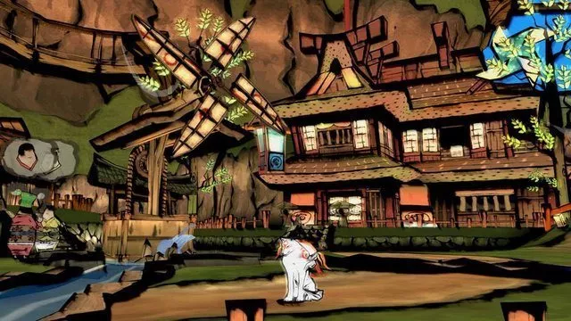

KAMIKI VILLAGE / 神木村 is the first location in Nippon that Amaterasu visits and is the place she meets Issun.
It is the home of the annual Kamiki Festival, legendary heroes Shiranui and Nagi, and Konohana, the Holy tree. Normally, the town is a sleepy agricultural landscape, hidden between two mountains and guarded by the sea. However, the defeat and reawakening of Orochi more than shook up the tiny town, leaving them fearing for their lives during a festival meant to celebrate their success over the last year.
Kusa Village
KUSA VILLAGE / クサナギ村 is a small village located on the mountain Kamiji, reached after clearing Taka Pass.
This town is heavily dependent on constant blowing breezes for both energy and day-to-day functions, given how many of the citizens structures and businesses take advantage of this natural powerhouse.
The village is home the Gale Shrine, dedicated to the god of the winds, and its guardians: former priest Yatsu, his beautiful wife and current priestess Princess Fuse, and their Canine Warriors.
Wep'keer Village
WEP'KEER / ウエペケレ is found in the icy snow-covered island to the north of Nippon, Kamui.
This village is home to the Oina people, a native tribe based on the Ainu people of Japan. The Oina view the entire island as their nation and home. These people are wary of outsiders, yet allow them to stay, so long as they do not invade or dwell near their village.
Kamui is a harsh landscape, blanketed in a heavy, white snow nearly year-round. Many of the civilizations are hidden between the twin peaks of Ezofuji, at which the Twin Demons Lechku & Nechku are enshrined. The terrain itself is uneven, with snowy land flowing into icy pools where was once flowed freely, making it easy to lose proper footing, slipping and falling all over the place.